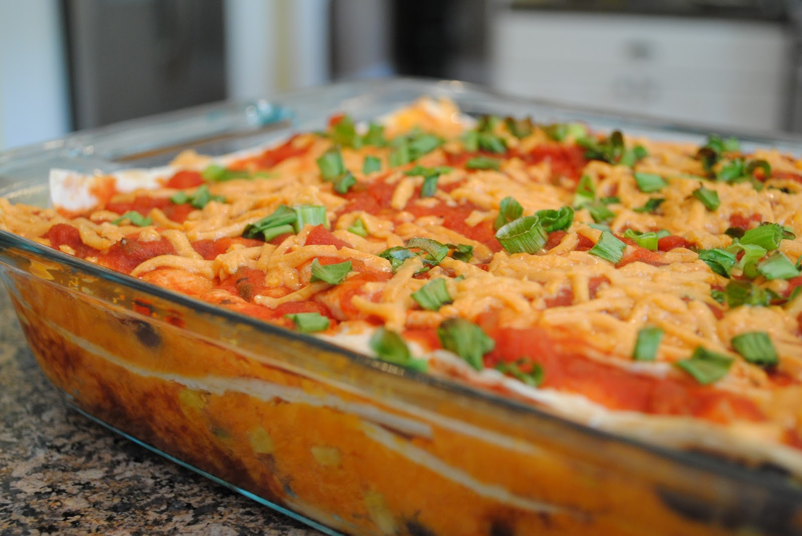

When it comes to winter comfort food, it’s hard to beat the wonderful flavours and aromas you get from slow-cooked casseroles. This simple cooking method takes everyday cuts of meat and chicken and transforms them into hearty, delicious meals.
The real beauty of casseroles is how easy they are to make. All you need to do is combine the prepared ingredients in a casserole dish, then cover and place in the oven to cook. The indirect heat of the oven warms the ingredients slowly, preventing the food from sticking together and burning onto the base of the dish.
Casseroles are cooked in a deep ovenproof dish (with a tight-fitting lid) that is glass, ceramic, cast iron, or any other ovenproof material. While the whole process of casseroling is fairly simple, there are a few secret tips and tricks that can help you turn an ordinary casserole into an outstanding dish from the oven. By following our easy guide, you’ll discover the art of making great casseroles, which cuts of meats to use and how to prepare them in advance to make them taste even better.
To achieve perfect results, try these handy hints.
Meat is the soul of most casserole dishes. Here are a few points to remember when selecting and preparing meat for your casserole.
Every casserole recipe has its own distinctive ingredients and flavours but, for each, the basic cooking process is the same. Here are the four key steps for a perfectly cooked and flavoursome meat casserole.
Place flour on a plate. Season with salt and pepper. Add the meat and toss to coat. Shake off excess. Alternatively, place seasoned flour in a sealable plastic bag. Add the meat and shake to coat. By coating the meat in this way, the flour thickens the liquid in the casserole.
Heat oil in a flameproof, ovenproof casserole dish or large non-stick frying pan over medium heat. Add one batch of meat and cook for 2-3 minutes or until brown. Transfer to a plate. Repeat with remaining meat, reheating the pan between batches.
Add a little extra oil to the dish or pan. Add the vegetables, such as onion, carrot and celery, and any extra ingredients, such as bacon or prosciutto. Cook, stirring with a wooden spoon, for 2-3 minutes or until the vegetables are soft and slightly golden.
Return the meat to the dish. If using a frying pan, transfer the meat and vegetables to an ovenproof dish. Stir in the liquid ingredients, such as stock, wine and canned tomatoes, and herbs or spices, if desired. Cover tightly and bake in the oven according to your recipe.
One of the advantages of casseroles is that you can cook them in advance. If possible, make your casserole one day ahead and store in the fridge – this intensifies the flavours of the dish. To freeze ahead, cool the cooked casserole, then freeze in an airtight container for up to three months. Don’t add dairy products, such as cream, to the casserole before freezing, or the mixture will curdle.
The long, slow and moist method of casserole cooking results in sensational flavour and texture, especially when you use tougher cuts and meat and chicken on the bone. Here’s a handy guide to the best cuts to choose.
Beef – Chuck steak, round steak, blade steak, topside, fresh silverside, skirt steak and boneless shin (gravy) beef.
Veal – Shanks, osso bucco, veal shoulder and diced veal.
Lamb – Boneless shoulder, boneless forequarter, shanks, neck chops and diced lamb.
Chicken – All chicken pieces are ideal for casseroles. For extra flavour, choose chicken pieces on the bone.
Pork – Diced pork shoulder, forequarter chops and pork belly.